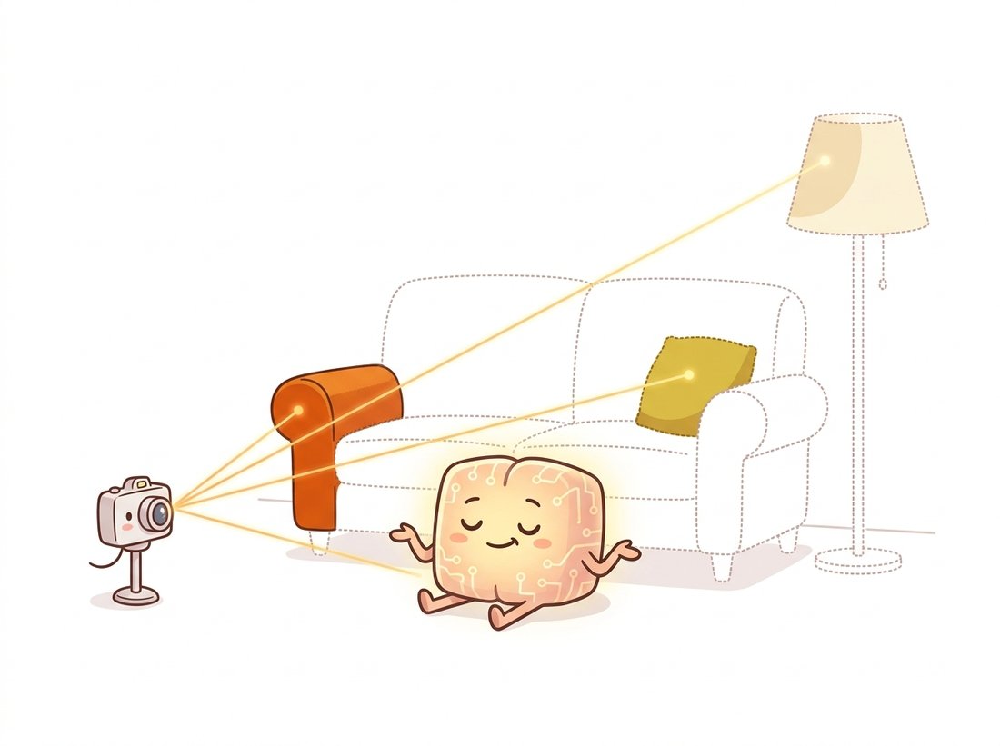

"They asked where the 3D model was stored. I pointed at a five-megabyte network and said, the scene is in here, but only as a promise: ask me about any point in space and which way you are looking, and I will tell you its color. The geometry exists only when you query it."
A Radiance Field That Keeps the Whole Room in Its Head
A neural radiance field stores an entire scene as a small network that maps a 3D location and a viewing direction to a color and a density, and renders new views by marching rays through that field and integrating the colors weighted by how much each point blocks the light. NeRF is the place where the volume rendering of computer graphics meets the gradient descent of deep learning. There is no mesh, no point cloud, no voxel grid; the geometry lives implicitly in the weights, and a photorealistic image of a never-before-seen viewpoint emerges from querying the network along millions of rays. This section derives the volume rendering equation, explains the positional encoding that lets a small MLP represent sharp detail, walks through the training loop that fits the field to a set of posed photographs, and is honest about the prerequisite no demo mentions: you must already know the camera poses, which come from the structure from motion of Chapter 14.
Everything in Section 27.2 and Section 27.3 stored geometry as explicit numbers. NeRF, introduced by Mildenhall and colleagues in 2020, made a different bet that reshaped the field: represent the scene as a continuous function, and learn that function with a neural network. The payoff is novel-view synthesis of startling realism, including view-dependent effects like specular highlights that an explicit mesh struggles with. The price is a representation you cannot directly inspect and, in the original form, hours of training and seconds per frame. We build the idea from its two halves: the rendering model (pure graphics, no learning) and the field (the network that the rendering trains).
1. The Scene as a Function Beginner
A neural radiance field is a function
that takes a 3D position $(x, y, z)$ and a viewing direction $(\theta, \phi)$ and returns an emitted color $(r, g, b)$ and a volume density $\sigma$. The density says how much the point blocks light (opaque surfaces have high density, empty air has zero), and it depends only on position, not direction, because where matter is does not change with how you look at it. The color, by contrast, depends on direction too, which is exactly what lets NeRF render a glossy surface that looks different from different angles. $F_\Theta$ is implemented as a multilayer perceptron of a few hundred thousand to a few million weights, the entire "model" of the scene.
The key conceptual shift is that the scene is not stored anywhere as geometry; it is stored as the ability to answer queries about any point. To make a picture, you ask the network about many points along many rays and combine the answers. That combination is the volume rendering equation.
2. Volume Rendering: Turning a Field Into a Pixel Intermediate
To find the color of one pixel, shoot a ray from the camera center through that pixel into the scene, exactly the ray of the pinhole camera from Chapter 12. Sample many points along the ray, query the field at each for its color $c_i$ and density $\sigma_i$, and accumulate them front to back. A point contributes its color in proportion to two things: how dense it is (how much light it emits or reflects) and how much of the light has not already been blocked by points in front of it. That second factor is the transmittance. Figure 27.4.1 shows the ray marching, and the discrete rendering equation is
Here $\delta_i$ is the distance between adjacent samples, $1 - e^{-\sigma_i \delta_i}$ is the opacity (alpha) contributed by sample $i$, and $T_i$ is the accumulated transmittance, the fraction of light that survived from the camera to sample $i$. The transmittance is an exponential of a sum because survival is multiplicative: passing each earlier sample multiplies the surviving light by $e^{-\sigma_j \delta_j}$, and multiplying those factors turns into summing the exponents, so a long stretch of dense material drives $T_i$ toward zero and samples hidden behind a surface contribute almost nothing. This is precisely the alpha compositing (the weighted-blend-by-opacity rule of Section 2.5) you would use to layer translucent images, applied here along a ray. Critically, every operation here is differentiable, so the rendered pixel color $C(\mathbf{r})$ can be compared to the true pixel and the error backpropagated all the way into the network weights $\Theta$.
Because the density spikes at surfaces, it is tempting to think NeRF stores an explicit surface like the meshes or occupancy grids of Section 27.2, so you could just read out "where the geometry is". In fact $\sigma$ is a continuous volumetric quantity tuned for one job only: to make the rendering integral reproduce the training photographs. It is not a signed distance, not a binary occupancy, and not even guaranteed to peak exactly on the true surface. NeRF is trained purely on photometric error, so nothing forces its density to be geometrically clean: it routinely places thin semi-transparent shells, fog near the surface, and "floaters" in empty space that happen to render correctly from the training views. Extracting a mesh therefore means thresholding the density with marching cubes and then cleaning artifacts, and the result is usually noisier than a mesh from a method that supervises geometry directly. Photorealistic novel views do not imply accurate, inspectable 3D geometry.
3. Positional Encoding: Why a Raw Coordinate Is Not Enough Intermediate
There is one subtlety without which NeRF produces only blurry blobs. An MLP fed raw 3D coordinates has a strong spectral bias: it learns low-frequency functions easily and high-frequency detail (sharp edges, fine texture) only with great difficulty. The fix is to lift each coordinate into a high-dimensional space of sinusoids of increasing frequency before feeding the network:
applied to each coordinate. This positional encoding (the same Fourier-feature idea, and the same name, as the transformer positional encoding of Chapter 22, here serving a geometric rather than a sequence-ordering role) gives the MLP direct access to high-frequency basis functions, so it can represent crisp detail. With $L = 10$ for position the three coordinates expand to 60 sinusoidal features (and to 63 in implementations that also append the raw coordinate), and the difference between encoded and raw input is the difference between a photorealistic NeRF and a smudge.
The effect is startling in isolation: take a small MLP and ask it to memorize a single high-frequency image, say a sharp checkerboard, by mapping pixel coordinate to color. Fed the raw $(x, y)$ it converges to a uniform gray mush no matter how long you train, because it physically cannot represent the high frequencies. Feed it the same coordinates wrapped in $\gamma$ and the identical network reproduces the crisp squares in minutes. Nothing changed but the input encoding, and the encoding is doing the seeing. This is also the exact bottleneck that Instant-NGP later attacked by replacing the fixed sinusoids with a learned multi-resolution hash grid, cutting training from hours to seconds.
The whole spectral-bias story collapses into one knob you can turn in two minutes. Take the checkerboard-fitting experiment above and vary $L$, the number of sinusoid octaves in $\gamma$, through $L = 0$ (raw coordinate, no encoding), $2$, $4$, and $10$, retraining the same tiny MLP each time. Watch the reconstruction sharpen as $L$ climbs: $L = 0$ stays a gray blur, $L = 4$ recovers the coarse squares, and $L = 10$ snaps the edges crisp. Then push to $L = 16$ and look for the failure on the other side, speckled high-frequency noise in flat regions, because frequencies finer than the pixel grid let the network fit aliasing it should ignore. The single observation to carry away: $L$ sets the highest spatial frequency the field can represent, so too few bands blur and too many invite noise, which is exactly why NeRF tunes $L$ per coordinate (around $10$ for position, far fewer for direction).
The volume rendering equation of subsection 2 is not new; it is decades-old computer graphics, the same compositing used to render clouds and smoke. NeRF's contribution is to make every step differentiable and to put a learnable network where the scene data used to be, so that gradient descent on a photometric loss discovers the scene from photographs. This pattern, take a classical, non-learned forward model (here, volume rendering), make it differentiable, and optimize its inputs, is one of the most productive recipes in modern vision, and it returns in Section 27.5 with rasterization and in Chapter 36 when a 2D generative prior sculpts a 3D field.
A NeRF is the most non-committal way to store a scene ever invented. Ask where the sofa is and it answers, in effect, "I will tell you the moment you point a ray at it, and not one nanosecond sooner." The geometry has no fixed location, no mesh, no coordinates you can read off; it exists only as a standing willingness to answer questions. It is a five-megabyte promise that the room will look correct from wherever you happen to stand, which is either profound or deeply unhelpful depending on whether you wanted to edit it. The illustration below catches the network mid-shrug, lighting up only the points a ray happens to ask about.

4. The Training Loop and the Pose Prerequisite Advanced
Training a NeRF is conceptually simple given the differentiable renderer. You have a set of photographs, each with a known camera pose. Repeatedly: pick a random batch of pixels across the images, cast their rays, sample points, query the network, volume-render the predicted colors, compare to the true pixel colors with a mean-squared loss, and step the optimizer. After enough iterations the network's density concentrates on the true surfaces and its colors match the photographs, at which point you can render any new viewpoint. The skeletal training step below shows the structure; the per-ray rendering is the equation of subsection 2.
# The NeRF inner loop: march sample points along each camera ray, query the
# field for color and density, convert density to opacity and transmittance,
# and integrate front-to-back into one pixel; the photometric loss trains it.
import torch
def render_rays(mlp, rays_o, rays_d, near, far, n_samples=64):
"""March rays through the field and volume-render. Returns (R,3) pixel colors."""
t = torch.linspace(near, far, n_samples, device=rays_o.device) # sample depths
pts = rays_o[:, None, :] + rays_d[:, None, :] * t[None, :, None] # (R, S, 3) points
rgb, sigma = mlp(pts, rays_d) # query field: color (R,S,3), density (R,S)
delta = t[1:] - t[:-1] # gaps between samples
delta = torch.cat([delta, torch.full_like(delta[:1], 1e9)])
alpha = 1.0 - torch.exp(-sigma * delta) # opacity per sample (eq. of subsection 2)
T = torch.cumprod(1.0 - alpha + 1e-10, dim=1) # accumulated transmittance
T = torch.roll(T, 1, dims=1); T[:, 0] = 1.0 # shift so sample i sees only blockers strictly in front
weights = T * alpha # contribution of each sample
return (weights[..., None] * rgb).sum(dim=1) # integrate to pixel color
def train_step(mlp, optim, rays_o, rays_d, target_rgb, near, far):
pred = render_rays(mlp, rays_o, rays_d, near, far)
loss = ((pred - target_rgb) ** 2).mean() # photometric loss, the only supervision
optim.zero_grad(); loss.backward(); optim.step()
return loss.item()render_rays implements the volume integral of subsection 2: sample along each ray, query the field, convert density to opacity and transmittance, and sum. The loss is simply the squared difference between rendered and true pixels; nothing supervises geometry directly.
The line every introduction glosses over is rays_o, rays_d: the ray origins and directions, which require knowing the exact camera pose (position and orientation) of every photograph. NeRF does not estimate these. You must supply them, and in practice they come from running structure from motion (COLMAP) over the input images, the exact pipeline of Chapter 14: detect and match features, estimate relative poses, and bundle-adjust. If those poses are wrong, the NeRF is wrong, no matter how good the network. This dependency is why Section 27.6 treats the whole capture-to-render pipeline as one workflow rather than treating NeRF as a standalone model.
Who: a small heritage-tech studio digitizing museum artifacts into interactive web exhibits, 2022. Situation: they captured 150 photos of a carved relief and trained a NeRF, expecting a crisp 3D rendering. Problem: the result was a ghostly double image with floating clouds of color (NeRF "floaters"), and they assumed the network was undertrained. After days of tuning the MLP, nothing improved. Decision: they finally inspected the COLMAP output and found that the reflective glass case had produced mismatched features, so a third of the recovered camera poses were badly wrong; the photometric loss was being fed contradictory geometry. They re-shot without the case, verified the sparse reconstruction looked clean, and retrained. Result: a sharp, view-consistent NeRF on the first attempt, with no change to the network at all. Lesson: a NeRF can only be as good as its poses; when a radiance field looks broken, suspect the structure-from-motion stage of Chapter 14 before you touch the network.
The hundreds of lines of ray generation, hierarchical sampling, and pose bookkeeping are wrapped end-to-end by Nerfstudio, which also runs COLMAP for you. A full capture-to-NeRF on your own photos is two commands:
# Shell commands (run in a terminal), not Python:
# 1. Recover camera poses from a folder of images via COLMAP, then package them.
# ns-process-data images --data ./my_photos --output-dir ./my_capture
# 2. Train a fast NeRF (Instant-NGP-style) and launch the live web viewer.
# ns-train nerfacto --data ./my_capturens-process-data runs COLMAP to recover the camera poses that Code Fragment 1 assumed were given, and ns-train nerfacto wraps the ray generation, hash-grid encoding, and hierarchical sampling that the from-scratch loop omits, ending in a live browser viewer.Nerfstudio's nerfacto bundles the hash-grid encoding, proposal sampling, and pose refinement that took the field years to develop, and gives a real-time browser viewer. It replaces the from-scratch loop above (and the manual COLMAP wrangling) with two commands, and it is the same tool the capture pipeline of Section 27.6 is built around.
Three frontiers extend NeRF. Speed: Instant-NGP (2022) and its descendants brought training to seconds; the 3D Gaussian splatting of Section 27.5 pushed rendering to real time. Generalization: rather than fitting one network per scene, feed-forward models such as pixelNeRF, MVSNeRF, and the 2024-2025 large reconstruction models (LRM) predict a radiance field from a few images (or even one) in a single forward pass, learning a prior over scenes instead of optimizing each from scratch. Pose-free: methods like BARF and Nope-NeRF, and the DUSt3R family and VGGT (CVPR 2025 Best Paper Award), jointly recover poses and geometry, attacking the very COLMAP dependency that broke the museum project above, in some cases removing structure-from-motion entirely. Depth Anything 3 (Lin et al., late 2025, arXiv:2511.10647) pushes this further, predicting depth, camera pose, and multi-view geometry from a single plain transformer and reporting on its benchmark roughly a 35 percent gain in pose accuracy and a 24 percent gain in geometric accuracy over VGGT. The trajectory points toward feed-forward, pose-free 3D reconstruction that runs in seconds, which is also the engine behind the 3D generation of Chapter 36.
NeRF is photorealistic and conceptually elegant, but the per-ray network query makes the original slow: every pixel of every frame costs dozens of forward passes. The representation that kept the quality while rendering in real time abandons the network-per-point idea entirely and returns to an explicit, but differentiable, point-based scene. That is 3D Gaussian splatting, the subject of Section 27.5.
Consider a single ray with five evenly spaced samples ($\delta_i = 1$) whose densities are $\sigma = [0, 0, 5, 0, 0]$ (a thin opaque surface at the third sample in otherwise empty space). Compute the opacity $1 - e^{-\sigma_i \delta_i}$ and the transmittance $T_i$ at each sample, then the rendering weight $T_i(1 - e^{-\sigma_i \delta_i})$. Verify that almost all the weight falls on the third sample and explain in two sentences why this means the surface color dominates the pixel and why samples behind the surface contribute nothing.
Implement the positional encoding $\gamma(p)$ of subsection 3 as a function that maps a coordinate to a vector of $2L$ sinusoids. Fit a tiny MLP to reproduce a 1D high-frequency target signal (for example $f(x) = \sin(20x) + \tfrac{1}{2}\sin(50x)$ on $[0,1]$) twice: once with raw $x$ as input and once with $\gamma(x)$ at $L=10$. Plot both fits against the target and report the final loss of each. Explain how the result demonstrates the spectral-bias problem and why NeRF needs the encoding to render sharp detail.
NeRF makes density depend only on position but color depend on both position and view direction. Explain in a paragraph what real-world optical phenomenon this design choice is meant to capture, and what would go wrong if color were also position-only (consider a shiny metal sphere photographed from several angles). Then argue why making density depend on direction would be physically incorrect and could let the network "cheat" by hiding geometry that only appears from certain views, harming novel-view synthesis.